The Nodes tab shows every device your radio has heard on the mesh. Tap any node for details.
| Element | Meaning |
|---|---|
| Short Name & Long Name — each node has a short name (up to 4 bytes) shown in the coloured circle and a long name displayed next to it. The circle colour is derived from the node number. The short name can be an emoji or initials. | |
| Online — the node has been heard recently and is considered online. | |
| Idle / Sleeping — the node has not been heard from recently and may be asleep or out of range. | |
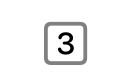 |
Hops Away — the number of intermediate nodes relaying messages between you and this node. No hops means direct communication. |
| Icon | Meaning |
|---|---|
|
Shared Key — direct messages are using the shared key for the channel. |
|
Public Key Encryption — direct messages use public key infrastructure. Requires firmware 2.5+. |
|
Public Key Mismatch — public key does not match the previously recorded key. Verify the contact out-of-band. |
Each node is configured with a role that determines how it behaves on the mesh. Roles are shown in the node detail view.
| Icon | Role | Description |
|---|---|---|
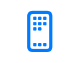 |
Client | Standard end-user device. Sends and receives messages, shares position. |
| Client Mute | Like Client but does not forward packets from other devices. Reduces mesh traffic near congested areas. | |
| Client Hidden | Only broadcasts as needed for stealth or power savings. | |
| Client Base | Rooftop node that distributes messages widely from nearby Client Mute nodes. | |
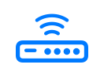 |
Router | Dedicated infrastructure node — prioritises packet forwarding. Not for rooftops or mobile nodes. |
 |
Router Late | Like Router but rebroadcasts once after all other nodes. Better suited to rooftop deployments. |
| Tracker | Broadcasts GPS position packets as priority. Optimised for frequent location reporting. | |
| Sensor | Broadcasts telemetry packets as priority. Optimised for sensor data. | |
| TAK | Optimised for ATAK system communication. Reduces routine broadcasts. | |
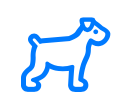 |
TAK Tracker | Enables automatic TAK PLI broadcasts. Reduces routine broadcasts. |
| Lost and Found | Broadcasts location as a message to the default channel to assist with device recovery. |
Choosing the Right Device Role →
The full node row shows the circle avatar, battery level, encryption status, last-heard time, device role, signal strength, and log indicators all at once.
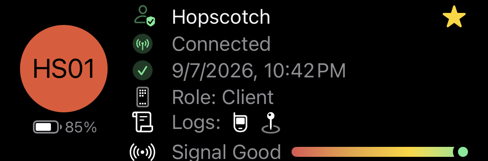
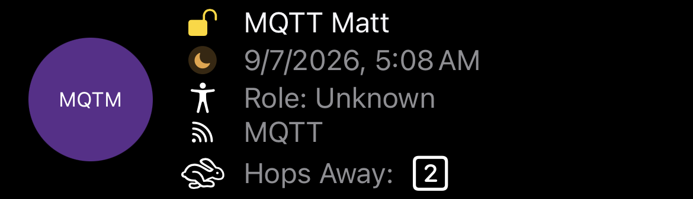
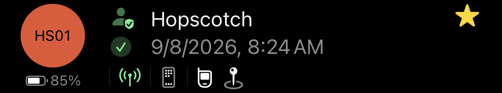
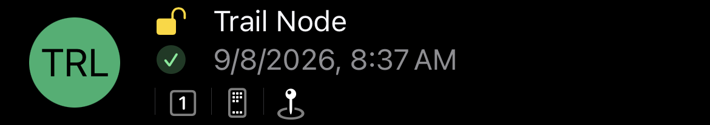
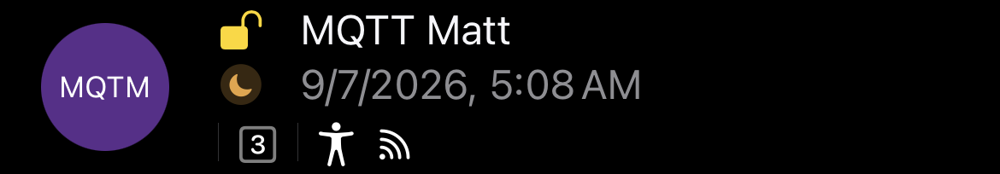
Long-press any node in the list to access quick actions:
Tap the filter icon above the list to narrow which nodes are shown. Filters apply across the Nodes list, the contacts picker in Messages, and the map, so a filter set in one place takes effect everywhere.
| Filter | What it shows |
|---|---|
| Online | Only nodes heard in the last two hours. |
| Favorites | Only nodes you have starred. |
| Public Key Encryption | Only nodes using PKI-encrypted direct messages. |
| Environment | Only nodes reporting environment telemetry (temperature, humidity, pressure). |
| Hops Away | Limit to nodes within a chosen number of hops, including direct (0-hop) only. |
| Distance | Limit to nodes within a chosen radius of your location. Falls back to the connected device's last position when phone location is unavailable. |
| Roles | Show only the device roles you select. |
| Connection | Show nodes reachable via LoRa, via MQTT, or both. At least one is always kept on. |
Filters are remembered between launches — the app reopens with the same filters applied. Search text is the exception: it is intentionally cleared on relaunch so you never reopen into a stale search that hides most of your nodes. Use the reset affordance to clear every filter and the search text at once.
Tap a node and scroll to the Logs section for detailed metrics:
| Log | Description |
|---|---|
| Direction and distance to the node based on GPS. Requires both devices to share location. | |
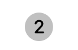 |
The numbered circle shows which channel the node uses. Only shown for secondary channels (not primary channel 0). |
| Battery level, voltage, channel utilisation, and airtime reported by the node. | |
| GPS position data including latitude, longitude, and altitude. | |
| Sensor data: temperature, humidity, barometric pressure. | |
| Motion or door open/close alerts from the node. | |
| Recorded trace route paths showing the hops a message took through the mesh. |
Local Stats show radio diagnostics reported by a node, including packets received, packets transmitted, duplicate packets, relayed packets, bad receives, canceled packets, online node count, total node count, and noise floor.
Noise floor is displayed in dBm when the node reports it. Treat it as a directional diagnostic instead of an absolute site score: readings can vary quickly, and external filters can lower or skew the displayed value because of insertion loss or in-band interference.
Tap any node to see the full detail view with hardware info, signal metrics, environment sensors, and log navigation:
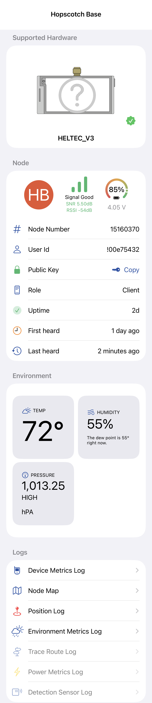
The hardware section shows information about the physical device running the node. The section title reflects the device's support status:
| Status | Meaning |
|---|---|
| Supported Hardware | Device is actively supported with firmware updates. |
| Discontinued Hardware | Device is no longer supported and does not receive firmware updates. |
For supported devices, the support tier is shown below the hardware name:
| Tier | Description |
|---|---|
| Flagship | Recommended device with full feature support and active development. |
| Niche | Supported device with active firmware updates and a specialised form factor. |
| Legacy | Older device that still receives firmware updates but may lack some features. |
For devices with known purchase links, an I want one section appears below the hardware info. It shows the official vendor link and regional marketplace options (Amazon, Rokland, AliExpress, and others) sourced from msh.to.
Marketplace links are filtered to your device region, so only stores that ship to your area are shown. Vendor links (directly from the device manufacturer) are always shown regardless of region.